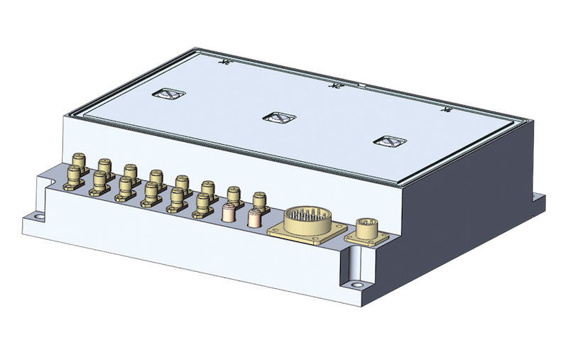
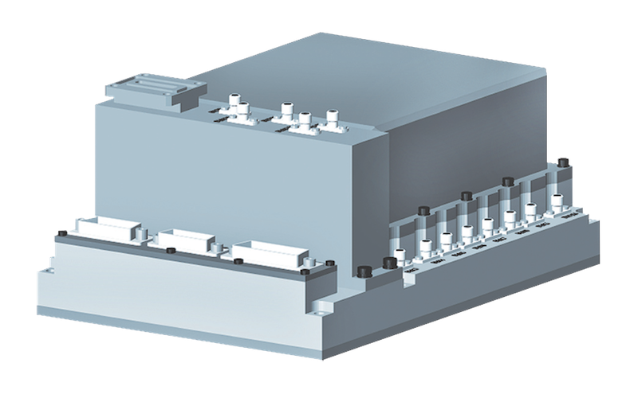

The receiving-mastering module is a multifunctional device intended for use in advanced airborne radars. The product provides the formation of a grid of operating frequencies in a wide microwave band, a highly stable tunable oscillator, a reference frequency for a synchronous detector with Doppler correction, reference clock frequencies for pulsed radar devices, and a number of service signals with the required characteristics in accordance with incoming information, and for receiving signals from antenna radar in three channels.
 
| CZM operating frequency range | X |
| duration of the microwave pulse, μs | 0.5…32 |
| output power level of the transmitter, Watt not less | 20 |
| relative level of spurious spectral components in the spectrum of the output signal in the band f=200 MHz, dB, no more than | -60 |
| bandwidth of the receiving channel, MHz | 4 |
| selectivity through mirror reception channels, dB, not less | 60 |